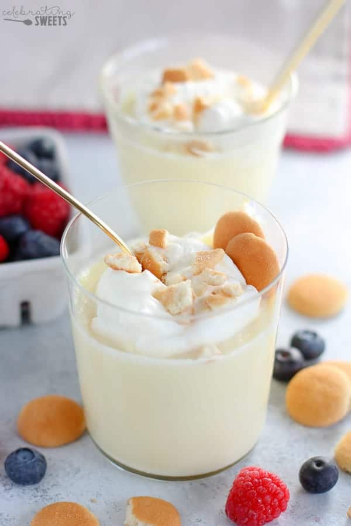

Description
This recipe only makes the taco meat, and assumes you buy all other ingredients necessary for the complete taco.
Create a big batch to share with friends and family, with the option to add variety to the taco platter using
beans, lettuce, tomatoes, and more! Get creative with it and enjoy!
Ingredients
- 1/3 cups white sugar
- 3 tablespoons cornstarch
- 1/4 teaspoon salt
- 2 1/2 cups milks
- 1 1/2 teaspoons vanilla extract
Steps
- Combine the sugar, cornstarch and salt in a saucepan.
- Add milk and cook over medium heat, constantly stirring until mixture thickens.
- Add vanilla extract and continue to cook for 2-3 minutes.
- Pour into individual molds rinsed with cold water
- Chill until firm and unmold.
- Enjoy!